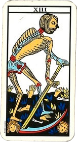

Habla con un tarotista ahora
Consultar¿Qué significa soñar con un ser querido fallecido?
Redactor: Admin
Despertar después de soñar con alguien que ya no está deja una huella difícil de describir. A veces es consuelo, a veces desconcierto, y muchas veces las dos cosas a la vez. Si has llegado hasta aquí buscando entender qué significa, lo primero que conviene saber es que es un sueño enormemente común y que, en la inmensa mayoría de los casos, habla de amor y de memoria, no de malos augurios.
DOS FORMAS DE ENTENDER ESTE SUEÑO
Hay dos grandes maneras de leer estos sueños y no tienes que elegir entre ellas. Muchas personas encuentran sentido en ambas.
La mirada del duelo. Cuando perdemos a alguien, la mente necesita tiempo para integrar esa ausencia. Los sueños son uno de los espacios donde ese trabajo ocurre: nos permiten seguir en contacto con la persona, revivir escenas, decir lo que no dijimos y, poco a poco, colocar la pérdida en un lugar donde podamos sostenerla. Que sueñes con alguien no significa que no estés avanzando; a menudo significa exactamente lo contrario.
La mirada simbólica y espiritual. Muchas tradiciones interpretan estos sueños como un reencuentro real, una visita o un mensaje de quien ya partió. Es una creencia extendida en culturas muy distintas y, para quien la sostiene, resulta profundamente reconfortante. Aquí la compartimos como lo que es, una forma de dar sentido a la experiencia, y cada persona decide qué lugar le da.
En la práctica, lo que más ayuda no es decidir cuál de las dos es "la verdadera", sino atender a cómo te dejó el sueño. Si despertaste en paz, algo se ha acomodado dentro de ti. Si despertaste con angustia, probablemente haya algo pendiente que pide atención.
QUÉ SIGNIFICA SEGÚN CÓMO APARECE
El detalle del sueño matiza mucho su lectura:
Te habla o te da un mensaje. Suele ser el sueño más reconfortante del duelo. Presta atención al contenido, porque casi siempre conecta con algo que necesitas escuchar: un permiso para seguir adelante, una despedida que no pudo darse o una preocupación tuya que toma prestada su voz.
Te abraza o te sonríe en silencio. Sin palabras, pero con una sensación clara de calma. Se interpreta como un signo de que el vínculo sigue vivo de otra forma y de que el proceso avanza hacia la aceptación.
La ves triste, enfadada o herida. Aquí conviene ser honesto: este sueño rara vez trata sobre el estado de la otra persona y casi siempre sobre tu culpa. Aparece con frecuencia cuando quedó una conversación a medias, un cuidado que crees que no diste o un reproche sin resolver. Es una invitación a perdonarte.
Sueñas que está viva, como si nunca hubiera muerto. Refleja la dificultad de aceptar la pérdida: una parte de ti sigue esperando que no sea real. Es habitual en las primeras fases y no indica nada negativo.
Se despide o se va. Aunque duela, suele señalar un cierre: estás soltando. Muchas personas sitúan este sueño justo en el momento en el que empezaron a sentirse mejor.
No consigues verle la cara o no puedes acercarte. Habla de la distancia que impone la ausencia y, a veces, del miedo a olvidar sus rasgos. Es uno de los sueños que más angustia genera y también uno de los más frecuentes.
Sueñas con un desconocido fallecido. Cuando la persona muerta no es alguien de tu vida, la lectura cambia: suele representar una etapa, un rol o una parte de ti que ha terminado.
SEGÚN QUIÉN SEA LA PERSONA
El vínculo también aporta información:
Un padre o una madre. Suelen relacionarse con la protección, la autoridad y el legado. Aparecen mucho en momentos de decisiones importantes, como si buscáramos su criterio.
Un abuelo o una abuela. Se asocian a las raíces, la sabiduría familiar y la sensación de pertenencia. A menudo llegan en épocas en las que necesitamos calma.
Una pareja. Conectan con el amor, la intimidad y, con frecuencia, con la pregunta de si es momento de volver a abrirse a alguien.
Un hijo, un hermano o un amigo cercano. Son los sueños más intensos y los que más se repiten. Aquí, más que interpretar, lo importante es cuidarse y no atravesarlo en soledad.
SOÑAR CON TU PROPIA MUERTE
Merece un apartado propio porque asusta mucho y se malinterpreta casi siempre. Soñar que mueres no anuncia tu muerte. En la interpretación simbólica es uno de los sueños de transformación más claros que existen: algo en tu vida está terminando para dar paso a otra cosa. Suele aparecer en mudanzas, rupturas, cambios de trabajo o momentos de replanteamiento personal. Comparte terreno con otros sueños de tránsito como soñar con caer.
¿ES UN MAL PRESAGIO?
No. Conviene decirlo con claridad porque es la duda que más angustia genera: soñar con una persona fallecida no anuncia ninguna desgracia, ni la muerte de nadie, ni una mala noticia en camino. La creencia popular que asocia estos sueños con avisos funestos no tiene ningún respaldo, y lo único que consigue es añadir miedo a un momento que ya es doloroso.
Estos sueños hablan de tu mundo interior: de tus recuerdos, de tu cariño, de lo que echas de menos y de cómo estás procesando una ausencia. Miran hacia dentro y hacia atrás, no hacia el futuro.
QUÉ DICE EL TAROT SOBRE LA MUERTE
Hay un paralelismo que ayuda a entender todo esto. En el tarot, la carta que más miedo despierta a primera vista es La Muerte, el arcano número 13. Y sin embargo, cualquier lectura seria coincide en lo mismo: casi nunca habla de un fallecimiento. Habla de finales, de ciclos que se cierran, de transformación y de lo que queda cuando algo se termina.

Ocurre lo mismo con estos sueños. La imagen impacta, pero el mensaje suele ser de tránsito y de amor, no de amenaza. Si te interesa esa lectura simbólica, puedes consultar el significado de todas las cartas del tarot o leer qué es el tarot.
CÓMO ACOMPAÑAR LO QUE SIENTES
Más allá del significado, hay algunas cosas que suelen ayudar cuando estos sueños aparecen:
Escríbelo. Anotar el sueño y lo que sentiste al despertar ordena mucho. Con el tiempo, releerlo te permitirá ver cómo evoluciona tu propio proceso.
No te fuerces a interpretarlo todo. A veces un sueño es simplemente un rato más con alguien a quien quieres. No siempre hay un mensaje cifrado.
Habla de ello. Compartirlo con alguien de confianza suele aliviar más que cualquier interpretación.
Busca apoyo si el dolor no da tregua. Si los sueños te generan angustia intensa, se repiten de forma persistente o sientes que el duelo se ha quedado atascado y te impide seguir con tu vida, hablar con un psicólogo especializado en duelo puede ayudarte de verdad. Pedir ayuda en ese punto no es un fracaso, es cuidarse.
Soñar con quien ya no está es, al final, una de las formas que tiene el vínculo de seguir existiendo. Y eso, aunque despertar duela, dice mucho de lo importante que fue esa persona para ti.
¿Te quedó una pregunta abierta?
Si tu sueño te dejó con una duda concreta, las cartas pueden ofrecerte una orientación para el momento que estás atravesando.
Tirada de tarot gratis Hablar con un tarotista¿Quieres seguir explorando tus sueños? Descubre también qué significa soñar con serpientes, soñar con caer o soñar con estar atrapado.
Preguntas frecuentes sobre soñar con muertos
¿Qué significa soñar con un ser querido fallecido?
Desde la psicología del duelo, estos sueños suelen ser una forma que tiene la mente de seguir procesando la pérdida y de mantener el vínculo con quien ya no está. Desde una mirada simbólica y espiritual, muchas personas los viven como un reencuentro o un mensaje de consuelo. Ambas lecturas pueden convivir.
¿Es normal soñar con personas que han muerto?
Sí, es muy común, especialmente durante los meses posteriores a la pérdida y en fechas señaladas como aniversarios o cumpleaños. También pueden reaparecer años después, cuando atravesamos un momento vital importante.
¿Qué significa soñar que un fallecido te habla?
Presta atención al contenido, porque suele conectar con algo que necesitas escuchar: un permiso para seguir adelante, una despedida que no pudo darse o una preocupación tuya que toma la voz de esa persona. Muchas personas lo viven como el sueño más reconfortante del duelo.
¿Qué significa soñar que un muerto está vivo?
Suele reflejar la dificultad de aceptar la pérdida: una parte de ti sigue esperando que no sea real. Es habitual en las primeras fases del duelo y no indica nada negativo, sino un proceso que aún está en marcha.
¿Soñar con muertos es un mal presagio?
No. A pesar de la creencia popular, soñar con una persona fallecida no anuncia ninguna desgracia ni la muerte de nadie. Estos sueños hablan de tu mundo emocional, de tus recuerdos y de tu proceso interior, no del futuro.